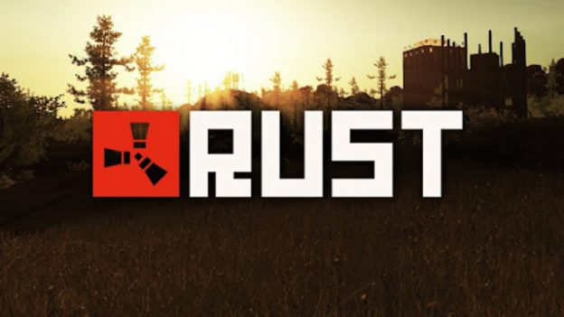

Rust
Игровой процесс
Rust — это многопользовательская компьютерная игра, в которой игроки сражаются друг с другом в суровом открытом мире[1]. В игре присутствуют такие опасности, как радиоактивное излучение и дикие животные, однако главная угроза исходит от других игроков[1].
В игре присутствуют официальные сервера или частные сервера с большим разнообразием модификаций и настроек. Каждый сервер периодически подвергается «вайпу» — сбросу прогресса игроков и игрового мира до первоначального состояния. Их периодичность зависит от сервера (еженедельно, ежемесячно), однако при этом «глобальный вайп» проходит ежемесячно на всех серверах во время обновления игры. Игроки могут сражаться в одиночку или объединиться с другими пользователями. На разных серверах размер команды может быть различным: одиночный, соло-дуэт-трио, или неограниченный. Преднамеренное превышение размера команды (например, сговор с другими игроками на соло-сервере) считается читерством и может повлечь за собой бан.
Большинство игровых карт сгенерировано процедурно[2], за исключением некоторых встроенных карт 